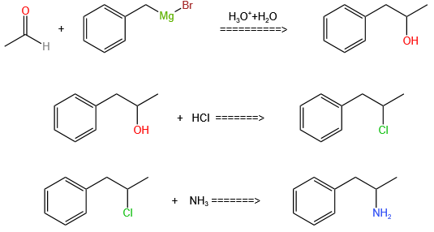

苯丙胺
合成
关于非法苯丙胺合成的更多信息：取代苯丙胺的历史和文化 § 非法合成
自1887年第一种制剂被报道以来，[213]已经开发了许多苯丙胺的合成途径。[214][215] 合法和非法合成苯丙胺的最常见途径采用称为Leuckart反应的非金属还原（方法1）。[47][216] 在第一步中，苯丙酮和甲酰胺之间的反应，使用额外的甲酸或甲酰胺本身作为还原剂，产生N-甲酰基苯丙胺。然后用盐酸将该中间体水解，然后碱化，用有机溶剂萃取，浓缩并蒸馏以产生游离碱。然后将游离碱溶解在有机溶剂中，加入硫酸，苯丙胺沉淀出来，成为硫酸盐。[216][217]
已经开发了许多手性分辨率来分离苯丙胺的两种对映异构体。[214] 例如，外消旋苯丙胺可以用d-酒石酸处理以形成非对映异构体盐，该盐被分馏结晶以产生右旋苯丙胺。[218] 手性分离仍然是大规模获得光学纯苯丙胺的最经济方法。[219] 此外，还开发了几种苯丙胺的对映选择性合成。在一个例子中，光学纯的（R）-1-苯基乙胺与苯丙酮缩合，产生手性希夫碱。在关键步骤中，该中间体通过催化氢化还原，将手性转移到碳原子α到氨基。通过氢化裂解苄胺键产生光学纯右旋苯丙胺。[219]
基于经典的有机反应，已经开发了大量苯丙胺的替代合成路线。[214][215] 一个例子是烯丙基氯化物对苯进行傅克烷基化反应，生成β-氯丙基苯，然后与氨反应生成外消旋苯丙胺（方法2）。[220] 另一个例子采用Ritter反应（方法3）。在这条路线中，烯丙基苯在硫酸中与乙腈反应生成有机硫酸盐，有机硫酸盐又用氢氧化钠处理，通过乙酰胺中间体得到苯丙胺。[221][222] 第三条路线从3-氧代丁酸乙酯开始，通过与碘甲烷的双烷基化反应，然后与氯苄进行双烷基化反应，可以转化为2-甲基-3-苯基丙酸。这种合成中间体可以使用Hofmann或Curtius重排转化为苯丙胺（方法4）。[223]
大量的苯丙胺合成具有还原硝基、亚胺、肟或其他含氮官能团的特征。[215] 在一个这样的例子中，苯甲醛与硝基乙烷的Knoevenagel缩合反应产生苯基-2-硝基丙烯。该中间体的双键和硝基通过催化加氢或氢化铝锂处理（方法5）进行还原。[216][224]另一种方法是苯丙酮与氨反应，产生亚胺中间体，该中间体在钯催化剂或氢化铝锂上使用氢气还原为伯胺（方法6）。[216]
方法一（还未经实验验证）: Sife合成法

方法1：Leuckart反应合成
上图：苯丙胺的手性分离 下图：苯丙胺的立体选择性合成
方法2：Friedel-Crafts烷基化合成
方法3：Ritter合成
方法4：通过Hofmann和Curtius重排进行合成
方法5：通过Knoevenagel缩合法合成
方法6：使用苯丙酮和氨水进行合成
A Synthesis of Amphetamine
J. Chem. Educ. 51, 671 (1974)
HTML by Rhodium
Amphetamine can be obtained in a 30% yield in a one step synthesis by refluxing phenylacetone in ethanol with ammonia, aluminium grit, and a small quantity of mercuric chloride. In the course of our educational program in pharmacochemistry, literature research was performed on the synthesis of amphetamine (alpha-methyl-phenylethylamine) and Pervitin (N,alpha-dimethylphenylethylamine). We were surprised not to find a synthesis for amphetamine similar to the one described for pervitin by Laboratories Amido [CA 62, 5228c]. By trying out this reaction procedure for amphetamine it was found that the yield of the reaction was not as high as for Pervitin (30% and 70%, respectively). However the easiness of the procedure makes this method worthwhile.
Experimental
A mixture of 40 g (0.3 mole) phenylacetone, 200 ml ethanol, 200 ml 25% ammonia, 40g (1.5 mole) Al-grit and 0.3 g (1 mmol) HgCl2 is warmed with vigorous stirring until reaction takes place, after which warming is stopped immediately. Cooling should be applied if the reaction becomes too violent. When the violence of the reaction has diminished, the mixture is refluxed with vigorous stirring for about 2 hr, concentrated in vacuo to 200 ml and poured into ice water, alkalinized with 120 g KOH, and extracted with ether. The extractions are treated with 20% HCl, the resulting water layer alkalinized and extracted with 150 ml ether. The organic layer is dried over Na2SO4, the ether evaporated, and the residue distilled in vacuo. Yield: 12.5 g (30%).
Preparation of amphetamine sulfate yielded 96-98% product with a purity of 99.2-99.8% (USP grade).
甲基苯丙胺
合成
关于非法苯丙胺合成的更多信息：取代苯丙胺的历史和文化 § 非法合成
外消旋甲基苯丙胺可以从苯丙酮开始，通过Leuckart[152]或还原胺化方法制备。[153] 在Leuckart反应中，一个当量的苯丙酮与两个当量的N-甲基甲酰胺反应，生成甲基苯丙胺加二氧化碳和甲胺作为副产物的甲酰酰胺。[153] 在该反应中，形成亚胺阳离子作为中间体，其被N-甲基甲酰胺的第二当量还原。[153] 然后将中间甲酰酰胺在酸性水性条件下水解，生成甲基苯丙胺作为最终产品。[153] 或者，苯丙酮可以在还原条件下与甲胺反应生成甲基苯丙胺。[注：153]
甲基苯丙胺还原胺合成甲基苯丙胺的方法
通过Leuckart反应合成甲基苯丙胺的方法
Methamphetamine Synthesis
via HI/Red Phosphorous Reduction of Ephedrine
Harry F. Skinner
Forensic Science International, 48 128-134 (1990)
HTML by Rhodium
Summary
The illicit manufacture of methamphetamine from ephedrine via reduction with hydriodic acid and rod phosphorus is discussed. The stereochemistry. mechanism, synthetic impurities, and analysis of clandestine methamphetamine samples are addressed.
Introduction
The most common method of manufacture of methamphetamine in the United States is the reduction of ephedrine with hydriodic acid and red phosphorus (HI/red P)1. Manufacture of methamphetamine from phenyl-2-propanone (P2P) and methylamine yields (±)-methamphetamine, whereas the reduction of (-)-ephedrine or (+)-pseudoephedrine yields (+)-methamphetamine.
Even though the HI/red P ephedrine reduction method is relatively new (1982) in clandestine laboratories, the method has been known for many years and has been used to reduce carbonyl groups, nitrites, halides, and alcohols2,3. Reduction of ephedrine to methamphetamine is well documented in the literature. The configurations of ephedrine were determined by reduction of the chloro- and bromoephedrines by Emde4 and Schmidt5 using various reduction methods not including the HI/red P method. Emde incorrectly cites Ogata6 as producing (+)-methamphetamine in 1919 by heating (-)-ephedrine or (+)-pseudoephedrine with HI and yellow phosphorus. The clandestine manufacture of (+)-methamphetamine from (-)-ephedrine or (+)-pseudoephedrine is a very simple process. A mixture of ephedrine, red phosphorus, and hydriodic acid is heated, filtered, made basic, extracted, and crystallized as the hydrochloride salt from ether/acetone with hydrochloric acid or hydrogen chloride gas or from trichloromonofluoromethane (i.e. "Freon-11') and hydrogen chloride gas. The salt is filtered and dried. The theoretical yield is 92% by weight of the precursor ephedrine, whereas the clandestine yields range from 50 to 75% by weight of the precursor ephedrine. The final product varies from white to orange/brown in color. It is usually greater than 95% in purity and contains no ephedrine.
Results and Discussion
The HI/red P reduction of ephedrine to methamphetamine involves a cyclic oxidation of the iodide anion to iodine and reduction of iodine back to the anion by the red phosphorus, the latter being converted to phosphorous or phosphoric acids7,8.
The stereospecificity of the reduction results from mechanistic factors as well as the diastereoisomeric nature of the ephedrines. Ephedrine and pseudoephedrine are 1-phenyl-1-hydroxy-2-methylamino-propane; each contains two chiral centers at the No. 1 and No. 2 carbons of the propane chain. Reduction to methamphetamine eliminates the chiral center at the No. 1 carbon.
The diastereoisomers, (-)-ephedrine and (+)-pseudoephedrine, are reduced to (+)-methamphetamine, whereas the enantiomers reduce to (-)-methamphetamine. The (±) mixture of either ephedrine reduces to racemic methamphetamine. The enantiomer and diastereoisomer of ephedrine selected as the precursor dictates what isomer of methamphetamine will be produced.
The interesting aspect of the HI/red P ephedrine reduction is that P2P is produced as an impurity in the synthesis. Normally, discovery of P2P in a clandestine laboratory indicates that (±)-methamphetamine, is the product. However, the P2P is formed as an impurity and has no bearing on the enantiomeric form of the synthesized methamphetamine, since the enantiomer of the methamphetamine product depends solely on the enantiomer of the ephedrine precursor.
The reaction mechanism for the reduction of ephedrine with HI/red P is summarized as follows. Ephedrine reacts with HI to form iodoephedrine (iodomethamphetamine) which is predominately reduced to methamphetamine. Iodoephedrine can undergo a ring closure to form 'aziridines'. The 'aziridines' (cis- and trans-1,2-dimethyl- 3-phenylaziridine, mol wt 147) could also be formed directly from ephedrine by acid dehydration9. However, formation from iodoephedrine is more likely. The 'aziridines' can be reduced to methamphetamine or react to form the impurities found in the reaction. The 'aziridines' can undergo a ring opening acidic hydrolysis to form phenyl-2-propanone. The P2P forms an aldol condensation product with subsequent dehydration to form the 'naphthalene' impurities, 1,3-dimethyl-2-phenylnaphthalene and 1-benzyl-3-methylnaphthalene10. The non-acidic reduction of chloroephedrine produces the 'aziridines' but no P2P11,12. The transient existence of iodoephedrine was detected indirectly by the total 'aziridines'. The analogous chloroephedrines undergo thermal decomposition to the 'aziridines' in the injection port of the gas chromatograph (Martin, W., pers. comm.).
Analysis
Samples from HI/red P laboratories vary from bottled precursors, solids, single and multiple phase liquids with a pH range of 1-14, to sludges. Identification of methamphetamine is easily made by direct infrared analysis on the finished product or acid/base extraction of most samples with subsequent conversion to the HCl salt. In cases where ephedrine HCl is present, either from addition as an adulterant or from incomplete conversion of the original ephedrine, methamphetamine HCl can be separated by washing the solid with chloroform. The chloroform insoluble portion - ephedrine HCl, and the chloroform soluble portion - methamphetamine HCl, can be easily identified by IR. GC/MS can also be used to identify methamphetamine.
The neutral P2P and 'naphthalene' impurities can be extracted from the methamphetamine in the original reaction mixture (acidic with HI) or any other acidic solution in the clandestine laboratory and can be identified easily by GC/MS techniques.
Ephedrine once exposed to hydriodic acid can form an ion-pair with the hydriodide. The methamphetamine formed in the reaction also can form an ion pair with the hydriodide. The HCl and HI salts of methamphetamine are both insoluble in ether and soluble in chloroform and very soluble in water. The HI salt is readily soluble in acetone, unlike the HCl salt which is only slightly soluble. The valuable property of the HI ion-pair is that methamphetamine HI can be extracted from an aqueous solution with chloroform. Methamphetamine HCl will not extract into chloroform from an aqueous solution. The HI salts of the ephedrines also have similar properties. Methamphetamine HI can be identified by IR from the original reaction mixture. This method of identification will also work on the discarded red P sludge. First, an ether wash is required to remove the neutral P2P and 'naphthalene' impurities. This is followed by a chloroform extraction. The chloroform extract is evaporated and the light yellow crystals of methamphetamine HI are identified by IR.
If the HI/red P reaction is incomplete, ephedrine HI or pseudoephedrine HI can be identified by their IR spectra using the same extraction procedures given above for methamphetamine HI. Partial conversion will obviously result in a mixture of the HI salts being obtained. Methamphetamine, ephedrine, and pesudoephedrine HI salts are light yellow solids at room temperature. Racemic methamphetamine HI is an oil. The enantiomeric (+) and (-) salts have identical IR spectra. However, the IR spectrum of the (±)-mixture differs from the enantiomers.
Identification of (+)-methamphetamine HI indicates that either (-)-Ephedrine or (+)-pseudoephedrine was reduced via the hydriodic acid/red phosphorus method. Identification of P2P and the 'naphthalenes' as impurities also indicates an ephedrine was reduced under acidic conditions.
The normal screening test for amphetamines is the Marquis reagent which turns orange to orange/brown. However, the Marquis reagent is not a useful test for methamphetamine HI. Methamphetamine HI reacts with the reagent to give an immediate dark brown color with the evolution of iodine. The dark brown color is caused by the iodine formed from the reaction of sulfuric acid with iodide ion. Most organic iodides also produce the same reaction with sulfuric acid. For example, all of the methamphetamine and ephedrine hydriodides, as well as sodium and potassium iodide, also liberate iodine with sulfuric acid. The nitroprusside13 screening reagent can be used to differentiate methamphetamine (secondary amine, deep blue color) from amphetamine and dimethylamphetamine (primary and tertiary amines, no color).
Quantitation of both solid and liquid samples found in HI/red P laboratories is routinely done by HPLC and GC. The retention times of compounds are given in Table 1. The enantiomeric form of methamphetamine or ephedrines is determined by one or more of the following: polarimetry, mixed microcrystals, mixed melting points, infrared or enantiomeric derivatization GC techniques.
Analysis of an HI/red P clandestine laboratory in the field presents hazards. HI is a toxic and strong irritant and contact must be minimized. Red phosphorus is a flammable/explosive solid and must be handled with care. Phosphine, a highly poisonous gas, can be produced by careless heating of the HI/red P mixture.
Conclusion
The hydriodic acid/red phosphorus reduction of ephedrine to methamphetamine has been discussed. The stereochemistry of the reaction has been shown as well as the route of reaction to the impurities and products. Data obtained from IR spectroscopy and GC/MS spectroscopy have been presented to aid in the analysis of the precursors, intermediates, impurities, and products.